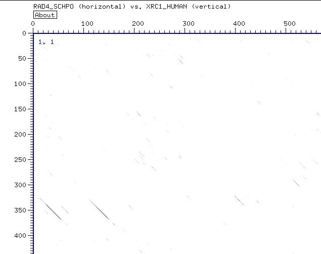

Identifying a conserved domain
- The only sequence having some similarity with XRC1_HUMAN is Rad4_schpo

- The dotter indicates that there could be three homologous segments
- In order to convince ourselves that these three segments are truly homologous, we can extract them and align them:[aln]
- Conclusion:Among these three very diverse sequences, enough positions are completely conserved for us to conclude on the homology of these three domains.
Identifying remote homologues
- To identify more remote homologues, use the NCBI psi-blast
- After two iterations, using XRC1_HUMAN, Liagses appear below the threshold[result]
- The question is to know whether these alignments mean that XRC1_HUMAN is homologous to the ligases
- The best way to establish that homology is to extract sequences from the Blast output and to make a multiple alignment[final_aln]
- Conclusion:Despite the divergeance among the sequences that consitute this alignment several positions are highly conserved. This indicates a potential homology.
Conclusion
- XCR1_HUMAN seems to be a good candidate for being involved in DNA repairing mechanisms.
- Thanks to the results given by the multiple alignment, we checked the five extra-sequences in psi-blast and re-ran it: [results]
- This time a gene associated with breast cancer appears: BRCA1. However, it is difficult to include that sequence in a meaningful multiple sequence alignment.
- In order to go further,one would need to build a profile and repeat the scanning made with psi-blast in a more controled maneer.
|